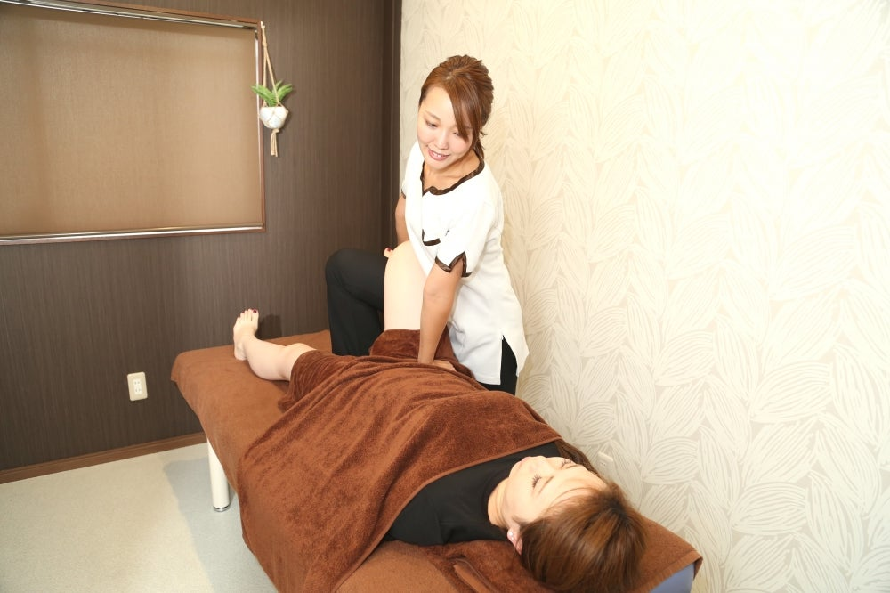
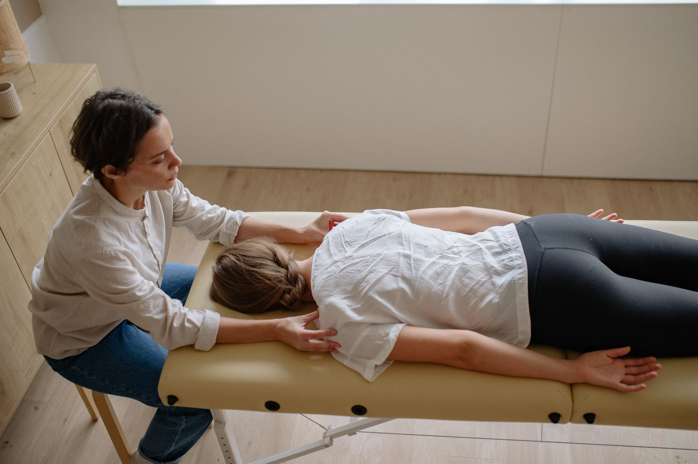
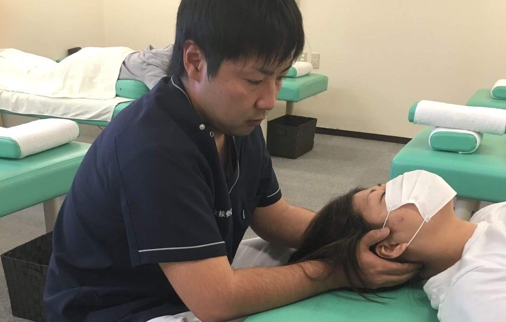
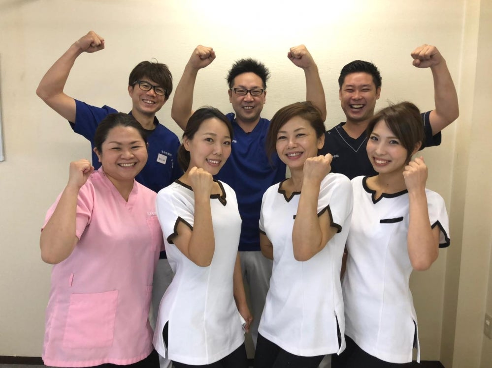

骨盤矯正
初めての方でも安心・安全。医療系国家資格者による骨盤矯正で、効果をすぐ体感いただけます。
¥4,860税込
岐阜市正木中｜マーサ21から車で1分
まさき接骨院は、全員がキャリア10年以上の医療系国家資格者。一回で効果を実感できる施術を心がけ、骨盤・姿勢の歪みから根本ケアを目指します。

その場しのぎではなく、骨盤と姿勢の歪みから根本ケアを目指します。
気になる症状から、対応するメニューをご案内します

肩こりや頭痛、首こりの原因は、猫背や巻き肩、頚椎のずれ、肩甲骨の位置異常など「悪い姿勢」にあることが少なくありません。当院では骨格にアプローチし、根本からの改善を目指します。
2016年開院｜岐阜市正木中

2016年、岐阜市正木中に開院。マーサ21から車で1分の接骨院です。スタッフ全員がキャリア10年以上の国家資格者で、骨盤矯正を中心に、お一人おひとりの体の状態に合わせた施術を行っています。
施術を担当するのは全員キャリア10年以上の医療系国家資格者。初めての方でも安心・安全に受けていただけます。
エキテンでは172件の口コミで評価4.77をいただいています。地域の皆さまに長く通っていただいている院です。
エキテンで口コミを見る
マーサ21より車で1分、バス停「ふじの湯・まさき接骨院」から徒歩1分。駐車場もご用意しています。
クレジットカード、QRコード決済（LINE Pay）に対応。お会計もスムーズです。
木曜は午前のみ｜土曜は 8:30〜13:00
| 受付時間 | 月 | 火 | 水 | 木 | 金 | 土 | 日・祝 |
|---|---|---|---|---|---|---|---|
| 9:00 〜 12:00 | ● | ● | ● | ● | ● | ― | 休 |
| 8:30 〜 13:00 | ― | ― | ― | ― | ― | ● | 休 |
| 16:00 〜 20:00 | ● | ● | ● | ― | ● | ― | 休 |
木曜日は午前のみ、土曜日は 8:30〜13:00 の受付です。日曜・祝日は休診となります。
ご予約はお電話で承っています。受付時間内に 058-215-8969 へお電話ください。ネット予約は行っておりませんので、お電話が確実です。
骨折・脱臼・捻挫・打撲・挫傷（肉離れ）など、ケガの施術には各種健康保険が使えます。ご来院の際は保険証をご持参ください。保険適用の可否は症状によりますので、お気軽にご相談ください。
駐車場をご用意しています。マーサ21より車で1分の場所にあり、バス停「ふじの湯・まさき接骨院」からも徒歩1分です。
現金のほか、クレジットカード、QRコード決済（LINE Pay）に対応しています。
お子様連れの方も来院されています。産後骨盤矯正など、お子様連れで受けられるメニューもありますので、お気軽にご相談ください。
妊娠中の腰痛・お悩みには、マタニティー整体をご用意しています。とってもソフトな整体ですので、安心して受けていただけます。
マーサ21より車で1分
受付：平日 9:00〜12:00／16:00〜20:00（木曜は午前のみ）・土曜 8:30〜13:00
メニューやクーポンの詳細は エキテンの店舗ページ でもご確認いただけます。